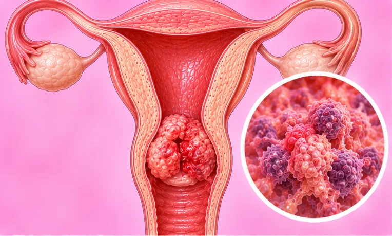

Lesi prakanker serviks
Perubahan sel yang tidak normal pada serviks (leher rahim) yang belum menjadi kanker
Apa itu
Sel pada permukaan serviks berubah secara tidak normal, paling sering setelah infeksi HPV yang berkepanjangan. Ini belum kanker, tetapi sebagian bisa perlahan menjadi kanker jika tidak dipantau.
- Leher rahim (serviks)
- Ditemukan lewat tes skrining
- Biasanya tanpa tanda sama sekali
- Dokter yang dituju
- Dokter umum, atau dokter spesialis kandungan (ginekologi)
- Sering pada
- Wanita yang aktif secara seksual; merokok atau sistem imun lemah meningkatkan risiko
- Menular
- Tidak. Tetapi HPV, penyebab yang umum, dapat menular lewat hubungan seksual
- Perjalanan
- Banyak perubahan ringan hilang dengan sendirinya; dokter akan menentukan kontrol lanjutan yang diperlukan
Tanda umum

Sering tanpa gejala di awalAsimtomatik 
Keputihan atau gatal di area kewanitaan yang tidak biasaKeputihan vagina yang abnormal Perdarahan di antara haidPerdarahan intermenstrual
Tanda lain
- Ditemukan pada tes skrining serviks (Pap smear atau tes HPV)
- Tanda-tanda ini juga bisa berasal dari masalah lain yang lebih umum
Mengapa terjadi

MerokokPenggunaan tembakau 
Daya tahan tubuh lemahImunosupresi
Penyebab lain
- Infeksi jangka panjang dengan jenis HPV tertentu, virus yang menular lewat hubungan seksual
- Kebanyakan infeksi HPV hilang sendiri; masalah mulai saat virus menetap bertahun-tahun
- Lebih banyak pasangan seksual, pada Anda atau pasangan Anda, menambah peluang tertular HPV
Periksa ke dokter lebih dulu jika
- Perdarahan hebat disertai pusing atau pingsan: segera ke rumah sakit
- Sedang hamil, dengan perdarahan atau nyeri perut hebat: segera ke rumah sakit
- Perdarahan di antara haid, setelah berhubungan seks atau setelah menopause
- Keputihan berdarah, berair atau berbau
- Nyeri panggul, atau nyeri saat berhubungan seks, yang tidak hilang
- Hasil skrining yang tidak normal dan belum ada jadwal kontrol lanjutan
Jika ada yang sesuai, silakan periksa ke dokter sebelum sesi.
Halaman ini berisi informasi umum. Tetap minum obat Anda seperti biasa dan tetap kontrol ke dokter.
Tetap minum obat Anda seperti biasa dan tetap kontrol ke dokter. Sesi kami adalah dukungan yang lembut dan tidak menggantikan perawatan medis.
Merawat diri

Kontrol rutin ke dokterKontrol medis rutin 
Berhenti merokokBerhenti merokok 
Dapatkan vaksin yang dianjurkanImunisasi 
Makan makanan sehat dan seimbangPola makan seimbang
Cara lain merawat diri
- Tanyakan kepada dokter apa arti hasil Anda dan apa langkah berikutnya
Beri tahu terapis Anda
- Kanker atau pengobatan kanker
- Kehamilan
- Obat pengencer darah
- Alat pacu jantung atau implan logam
Terapis akan membahasnya bersama Anda sebelum mulai.
Tanya jawab
Apa itu Lesi prakanker serviks?
Perubahan sel yang tidak normal pada serviks (leher rahim) yang belum menjadi kanker. Sel pada permukaan serviks berubah secara tidak normal, paling sering setelah infeksi HPV yang berkepanjangan. Ini belum kanker, tetapi sebagian bisa perlahan menjadi kanker jika tidak dipantau.
Apa saja tanda umum Lesi prakanker serviks?
Sering tanpa gejala di awal · Keputihan atau gatal di area kewanitaan yang tidak biasa · Perdarahan di antara haid
Mengapa Lesi prakanker serviks terjadi?
Merokok · Daya tahan tubuh lemah
Bagaimana merawat diri saat mengalami Lesi prakanker serviks?
Kontrol rutin ke dokter · Berhenti merokok · Dapatkan vaksin yang dianjurkan · Makan makanan sehat dan seimbang
Apakah sesi AI Body Master bisa membantu Lesi prakanker serviks?
Sesi ini adalah dukungan meridian yang lembut tanpa jarum untuk kebugaran Anda. Sesi ini bukan pengobatan untuk Lesi prakanker serviks dan tidak menggantikan obat atau dokter Anda. Beri tahu terapis Anda sebelum sesi dimulai.
Kondisi terkait
Referensi: General information based on public health sources such as Mayo Clinic, NHS, Cleveland Clinic and NCBI StatPearls.
Halaman diperbarui: 2026-11-09